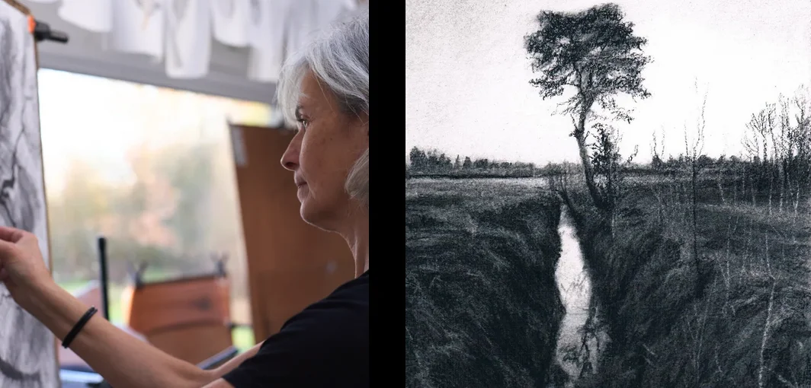
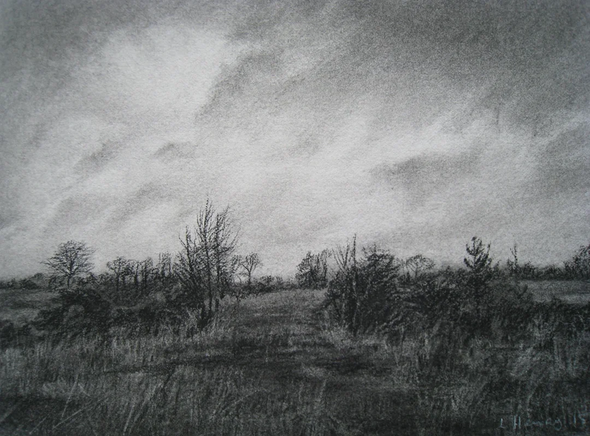
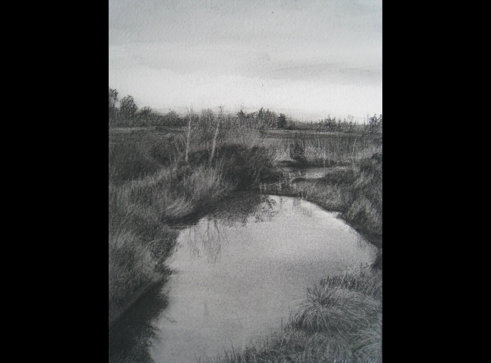
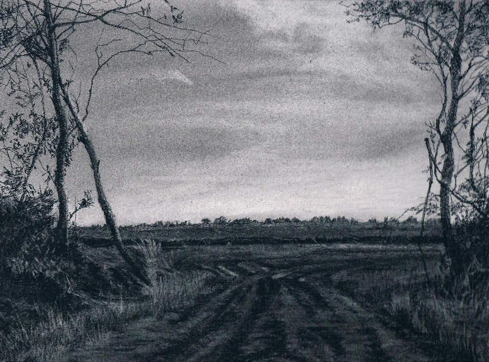

Leila Henry

Lelia Henry is a visual artist from Coosan, Athlone. She has spent many years studying and developing her work, completing a master’s degree in Art & Process at Crawford College of Art in 2020, as well as training in drawing at National College of Art and Design, Dublin and the Florence Academy of Art in Italy.
Her work has been recognised both in Ireland and abroad. She has received several Arts Council awards, including the Thomas Dammann Junior Memorial Trust Award on two occasions. In 2017, she was named Irish Landscape Artist of the Year at the National Open Art Competition in London. Her drawings have been shown in well-known galleries such as the Royal Hibernian Academy in Dublin, the Royal Ulster Academy in Belfast, and galleries in London and England. She has also had solo exhibitions, most recently Conversations with Trees at the RHA Ashford Gallery. In 2026, her work will be shown at Luan Gallery in Athlone as part of an exhibition of contemporary drawing. Her drawings are held in a number of public and private collections, including the Office of Public Works State Art Collection.
Lelia mainly works in drawing, using charcoal. She is particularly interested in parts of the rural landscape that are often overlooked or taken for granted – places shaped by human activity and time, but rarely noticed. Her work reflects a deep concern for the loss of the natural world. Through carefully made, detailed drawings, she invites people to slow down and spend time looking, offering a quiet space to reflect on our relationship with the land and the environments around us.
Winter Bogs


